A research pipeline that turns daily data on 500+ equities into tradable portfolios without fooling itself. It builds point-in-time momentum, mean-reversion, volatility and liquidity factors, generates 50+ candidate alphas, validates them with purged K-fold cross-validation, embargoing, sector and beta neutralisation and multiple-testing correction (cutting in-sample-to-out-of-sample Sharpe decay by 18%), and combines the survivors into volatility-targeted portfolios under turnover, exposure and cost constraints: 0.82 out-of-sample Sharpe, 11.6% maximum drawdown in simulation. Python, Polars, SciPy, Statsmodels, PyTorch. Everything you need for a 30–45 minute quant interview.
Resume bullets this booklet defends
The one-line version. Every day, rank 500+ stocks by signals that historically predicted which would outperform the others, check that those signals are real rather than lucky, and build a risk-controlled portfolio that buys the top and avoids or shorts the bottom.
Start with an example. On a given day, compute each stock's return over the past twelve months, skipping the most recent month. Rank all 500 stocks. Historically, stocks in the top of this ranking (winners) have tended to outperform those at the bottom (losers) over the next month: the momentum effect. That ranking is a factor. Turning it into a daily score per stock is an alpha signal. But two traps follow. First, if the top-ranked stocks are mostly technology stocks, the "alpha" may just be a bet on the technology sector; neutralisation removes that. Second, if you test 50 variants of signals and keep the best, one will look good by chance; multiple-testing correction guards against that. Only signals that survive both become inputs to the portfolio, which is sized to a target volatility and constrained so that it does not trade too much or carry unintended exposures.
The problem it solves. Factor research has a notorious failure mode: signals that look excellent in-sample and disappoint out-of-sample. Causes include look-ahead bias, survivorship bias, overlapping labels, hidden sector or market exposure, and data snooping across many tries. This project builds the safeguards into the pipeline and measures their effect as a reduction in Sharpe decay.
Who would use it. Quant researchers and portfolio managers at systematic equity funds; risk teams evaluating factor exposures.
Inputs and outputs. Inputs: daily prices, returns, volumes, sector classifications and index membership for 500+ stocks, point-in-time [confirm data source and period]. Outputs: a library of 50+ candidate alphas with validation statistics, a selected subset, daily portfolio weights, and an out-of-sample backtest (Sharpe, drawdown, turnover, exposures).
What makes it technically interesting. Clean point-in-time data engineering; statistics of signal evaluation (IC, t-statistics, multiple testing); the economics of neutralisation; and constrained portfolio optimisation with costs.
"I built a cross-sectional equity research pipeline over 500-plus stocks. It constructs point-in-time factors, so every value uses only information available on that date, across four families: momentum, mean reversion, volatility and liquidity, and from them generates more than 50 candidate alphas. Because testing that many signals invites false discoveries, I validated them with purged K-fold cross-validation and embargoing, neutralised them against sectors and market beta, and applied multiple-testing correction. That reduced the decay from in-sample to out-of-sample Sharpe by 18%. The surviving alphas feed a volatility-targeted portfolio with turnover, exposure and cost constraints, which delivered a 0.82 out-of-sample Sharpe with an 11.6% maximum drawdown in backtest."
Scope boundary. Daily-frequency cross-sectional research and simulated portfolios. Not live trading, not intraday execution, and not fundamental (accounting) factors, since the listed families are price- and volume-based.
No code, data or backtest logs for this project are in the Resume Prep folder, so every resume number is marked UNVERIFIED: your reported result, with the evidence needed to defend it. Numbers in worked examples are ILLUSTRATIVE. Items marked [confirm] are standard choices assumed to explain the bullets.
Confirm before interviewing. (1) "Reduced Sharpe decay by 18%": define decay () and say whether 18% is relative (for example 50% → 41%) or percentage points (50% → 32%), and versus which baseline pipeline. (2) Sharpe 0.82: net or gross of costs, and the cost model. (3) Long/short or long-only; whether the portfolio was dollar- and beta-neutral. Do not call it market-neutral unless the constraints enforced it. (4) Which multiple-testing method. (5) "Over 50+" is redundant wording; say "more than 50". (6) What PyTorch did (for example a non-linear alpha-combination model).
| Resume bullet | Concepts you must be able to explain |
|---|---|
| 1. Point-in-time pipeline, 500+ equities, momentum, mean reversion, volatility, liquidity, 50+ alphas | Alpha, cross-sectional vs time-series, point-in-time data, look-ahead and survivorship bias, factor construction, ranking, IC |
| 2. Purged K-fold, embargo, neutralisation, multiple-testing correction, −18% Sharpe decay | Purged K-fold, embargo, sector/beta neutralisation, multiple hypothesis testing, data snooping, corrections, IS vs OOS Sharpe decay |
| 3. Volatility targeting, turnover/exposure/cost constraints, 0.82 OOS Sharpe, 11.6% drawdown | Portfolio construction, optimisation, volatility targeting, constraints, transaction costs, Sharpe, maximum drawdown |
multipletests implements the first three.
Step 1: Point-in-time data. Build the daily universe as of each date (including delisted names), apply corporate-action adjustments known at that time, attach point-in-time sectors, and timestamp everything so signals computed at the close of are traded at . Polars handles the large panel efficiently. Reason: removes look-ahead and survivorship bias at the source.
Step 2: Factors and alphas. Compute momentum, reversal, volatility and liquidity families with several lookbacks and normalisations; winsorise and rank or z-score per date; result: 50+ candidate alphas. Reason: diverse, economically motivated signals.
Step 3: Neutralise. Regress each alpha cross-sectionally on sector dummies and beta per date and keep residuals. Reason: evaluate stock-specific information, not disguised exposures.
Step 4: Validate. Purged K-fold with embargo: compute mean IC, ICIR, Newey-West -statistics and long/short Sharpe per alpha on test folds. Reason: honest, leakage-free estimates for many candidates.
Step 5: Correct for multiple testing. Adjust -values across all candidates (and count every variant tried); keep only survivors; check correlation among survivors. Reason: discard lucky signals; this is the main lever on Sharpe decay.
Step 6: Build the portfolio. Combine survivors into expected returns; optimise weights with exposure, turnover and cost constraints; scale to the volatility target. Reason: turn forecasts into an investable, risk-controlled book.
Step 7: Out-of-sample backtest. Run on periods not used in Steps 2–5; report Sharpe (0.82), maximum drawdown (11.6%), turnover, cost drag and exposures; compare decay against a pipeline without the safeguards (−18%). Reason: the final, honest verdict.
| Claim | What it means and how it is computed | Baseline and what could mislead | Status |
|---|---|---|---|
| 500+ equities | Point-in-time universe per date | Survivorship if today's list used | UNVERIFIED |
| 50+ alphas | Candidate signals across four families | Effective tests fewer (correlated) | UNVERIFIED |
| −18% Sharpe decay | Change in vs naive pipeline | Relative vs points; which baseline | UNVERIFIED; define |
| 0.82 OOS Sharpe | Annualised daily portfolio Sharpe on held-out periods | Gross vs net; period; SE ≈ 0.4–0.5 | UNVERIFIED |
| 11.6% max DD | Worst peak-to-trough of OOS equity | Depends on vol target and period | UNVERIFIED |
To defend these, bring: data and universe construction, the alpha list with IC statistics, the correction method and survivors, the decay comparison table (with and without safeguards), the optimiser formulation and cost model, and the OOS equity curve with exposures.
1. Point-in-time universe and data instead of today's constituents. Why: removes survivorship and look-ahead bias that silently inflate backtests. Alternative: current index members with adjusted history. Trade-off: harder data engineering (delistings, historical membership, corporate actions).
2. Purged K-fold with embargo instead of a single train/test split. Why: many alphas need many test periods for stable estimates; purging and embargo remove leakage from overlapping labels. Alternative: one split or plain walk-forward. Trade-off: folds after the test block use "future" training data, so a final walk-forward hold-out is still needed.
3. Neutralise to sectors and beta before judging alphas. Why: reveals whether an alpha has stock-specific information or is a disguised exposure. Alternative: evaluate raw signals. Trade-off: some genuine sector information is removed.
4. Multiple-testing correction instead of picking the best backtests. Why: with 50+ candidates, several will look significant by chance. Alternative: select on raw -statistics. Trade-off: fewer survivors and some real but weak alphas discarded.
5. Mean-variance optimisation with constraints instead of top-decile equal weights. Why: uses risk and cost information and enforces exposure and turnover limits. Alternative: equal-weight long/short deciles. Trade-off: sensitive to errors in and ; needs shrinkage and constraints for stability.
6. Volatility targeting instead of constant leverage. Why: stable risk over time, smaller drawdowns in turbulent periods. Alternative: fixed gross exposure. Trade-off: lag after sudden shocks, and extra turnover from rescaling.
"This project is a cross-sectional equity pipeline over 500-plus stocks. Every day it ranks stocks by signals that historically predicted relative returns: momentum, short-term mean reversion, low volatility and liquidity, with variants giving more than 50 candidate alphas. All data are point-in-time: universe membership, adjustments and timestamps are as of each date, so there is no look-ahead or survivorship bias.
The research problem is that factor backtests decay out of sample. So I validated the alphas with purged K-fold cross-validation and embargoing to handle overlapping labels, neutralised them to sectors and beta to remove disguised exposures, and corrected for multiple testing across all the candidates. Those safeguards reduced in-sample to out-of-sample Sharpe decay by 18%.
The survivors are combined and fed to a constrained optimiser with exposure, turnover and cost limits, then scaled to a volatility target. Out of sample, the backtest delivered a 0.82 Sharpe with an 11.6% maximum drawdown."
"From data to factors. I build a daily panel of 500-plus stocks with point-in-time universe membership, including names that were later delisted, and corporate actions applied only as they became known. Factors fall into four families: 12-minus-1-month momentum; short-term reversal, minus the past week's return; low volatility; and Amihud illiquidity. Each is winsorised and ranked or z-scored across stocks on each date, giving more than 50 alpha variants.
From factors to validated alphas. For each alpha I compute the daily cross-sectional rank IC against forward returns, its mean and its information ratio, and a Newey-West t-statistic because overlapping horizons make daily ICs autocorrelated. Evaluation uses purged K-fold: training observations whose forward-return windows overlap the test fold are removed, with an embargo after it. Before evaluation I neutralise each alpha by regressing it cross-sectionally on sector dummies and beta and keeping the residual. A low-volatility alpha, for example, is largely short beta; after neutralisation much of its raw performance can disappear, which tells you it was an exposure, not alpha.
Multiple testing. With 50 candidates at 5% significance, about two or three useless signals pass by luck. I corrected p-values across all candidates and kept only survivors. Compared with the naive pipeline, the decay from in-sample to out-of-sample Sharpe fell by 18%.
Portfolio. Survivors are combined into expected returns, then a mean-variance optimiser with sector and beta exposure limits, a turnover cap and cost penalties produces weights, which are scaled to a volatility target. Out of sample: 0.82 Sharpe, 11.6% maximum drawdown."
"I'll go deeper into data integrity, the statistics of selection, neutralisation, the optimiser and the limitations.
Data integrity. Three biases. Survivorship: using today's constituents removes failed companies, which were often prior losers, inflating momentum and other signals. Look-ahead: using information after the decision time, including restated data or adjustments not yet known. Timing: a signal computed at today's close cannot trade at today's close; I trade the next session. Polars lets me compute features over the whole panel quickly with lazy, columnar operations.
Evaluation statistics. A daily cross-sectional IC around 0.02 to 0.05 is typical for useful signals. Consistency matters as much as level, so I look at ICIR and at IC by year. With multi-day forward returns, consecutive ICs share most of their return window, so the naive t-statistic is overstated; Newey-West corrects for that.
Purged K-fold. It gives every period a turn as the test set, which is valuable when comparing many alphas, while purging removes overlapping labels at the boundaries and the embargo handles serial correlation. Because K-fold trains on data after the test fold, the final portfolio result is still reported on a forward hold-out.
Multiple testing. The chance that at least one of 50 null signals passes at 5% is about 92%. Bonferroni requires p below 0.001; Benjamini-Hochberg controls the false discovery rate and keeps more power. Alphas are correlated, so the effective number of tests is smaller than the raw count, but every variant I tried should be counted.
Neutralisation. Regressing on sectors and beta removes exposures that are cheap to obtain and that would dominate risk. If a raw alpha's IC collapses after neutralisation, it was a disguised sector or beta bet.
Portfolio. Maximise expected alpha minus a risk penalty minus costs, subject to exposure, turnover and position limits; the risk model needs shrinkage to be stable. Volatility targeting rescales the book so that predicted volatility stays near target; that stabilises risk and limits drawdowns in turbulent periods.
Results and limits. Out-of-sample Sharpe 0.82 with an 11.6% drawdown; the standard error of a Sharpe over five years is roughly 0.5, so I present it as encouraging rather than proven. Decay fell by 18% relative to the naive pipeline. Limitations: I should state whether the Sharpe is net of costs, and what the cost model assumed; factor crowding and regime shifts, like momentum crashes, are real risks; and price-based factors are well known, so their future premia may be smaller. Next steps: fundamental and alternative data, a proper factor risk model, and capacity analysis."
It is a research pipeline for cross-sectional equity strategies. For 500+ stocks, it builds point-in-time factors from four families (momentum, mean reversion, volatility and liquidity) and generates more than 50 candidate alpha signals. It then tests them carefully: purged K-fold cross-validation with embargoing to avoid leakage from overlapping returns, neutralisation against sectors and market beta to remove disguised exposures, and multiple-testing correction so lucky signals are discarded. Those safeguards reduced the gap between in-sample and out-of-sample Sharpe by 18% compared with a naive process. Finally, it combines the surviving alphas into volatility-targeted portfolios using an optimiser with turnover, exposure and cost constraints. The out-of-sample backtest showed a 0.82 Sharpe and an 11.6% maximum drawdown. These are simulated results, not live trading.
Alpha is return beyond what market exposure explains: in , it is the intercept. In research language, "an alpha" is also a signal that predicts relative returns. A time-series strategy predicts whether one asset will go up or down and takes a directional position, for example trend-following on an index. A cross-sectional strategy compares many assets on the same date and bets on relative performance: long the stocks with the highest scores, short or underweight the lowest. Its advantages: high breadth (hundreds of bets every day), and much of the market's direction cancels between longs and shorts, so returns depend on ranking skill rather than market timing. My project is cross-sectional: every signal ranks 500+ stocks against each other on each date.
Point-in-time means every value used in the backtest on date is exactly what was knowable on date . Three things commonly break this. Universe: using today's index constituents for past dates removes companies that later failed or were delisted, which is survivorship bias; because failed firms were often recent losers, it inflates momentum and other strategies. Adjustments and revisions: using split or dividend adjustments, or corrected data, that were only known later. Timing: using the close price on day both to compute a signal and to trade on it. A point-in-time pipeline keeps historical membership including delisted names, applies corporate actions as they occurred, timestamps every field, and trades no earlier than the next session after a signal is computed. These biases are invisible in results, which is why they must be prevented by construction.
Momentum: stocks that performed well over the past 6–12 months tend to keep outperforming for a few months; the standard version is 12-1 momentum, the return from 12 months ago to one month ago, skipping the last month because very recent returns tend to reverse. Explanations include investor underreaction. Mean reversion (short-term reversal): stocks with extreme returns over the past days or week tend to partly reverse, often explained as compensation for providing liquidity. Volatility: low-volatility stocks have historically delivered better risk-adjusted returns than high-volatility ones, often attributed to leverage constraints and lottery preferences. Liquidity: measures such as Amihud illiquidity (absolute return per dollar traded) capture how costly a stock is to trade; illiquid stocks may earn a premium. The families have different horizons and explanations, so they diversify each other.
Data to factor: from point-in-time prices and volumes, compute a characteristic per stock per date, for example 12-1 month return. Factor to alpha signal: clean it so it is comparable across stocks and dates: winsorise outliers, rank or z-score cross-sectionally each day, neutralise to sectors and beta, and verify it predicts forward returns out of sample (positive, stable IC; significant after multiple-testing correction). Signal to portfolio: combine surviving signals into one expected-return estimate per stock, then choose weights with an optimiser that trades off expected alpha against risk and costs under exposure, turnover and position limits, and finally scale the whole book to a volatility target. Each stage has its own failure mode: biased data, spurious signals, or portfolios that are concentrated, expensive to trade or full of unintended exposures.
The IC is the correlation, usually Spearman rank correlation, between a signal's values across stocks on date and those stocks' subsequent returns. Computing it each day gives a time series; its mean measures average predictive power, its standard deviation measures consistency, and their ratio is the ICIR. Daily cross-sectional ICs of 0.02–0.05 are typical for useful equity signals; even small ICs matter because breadth is high (the fundamental law: ). I used mean IC, ICIR and -statistics to rank and select alphas, alongside each alpha's long/short portfolio Sharpe. Because forward returns over several days overlap from one day to the next, daily ICs are autocorrelated; I used Newey-West standard errors so significance was not overstated [confirm horizons].
Neutralisation removes the part of a signal explained by common exposures. On each date, regress the signal across stocks on sector dummies and beta, and keep the residual: the neutralised signal has zero correlation with those exposures. A raw alpha can look strong simply because it tilts toward something that happened to perform well. A low-volatility signal is largely a short-beta bet: it buys defensive stocks and avoids high-beta ones, so in a falling market it looks brilliant. A signal concentrated in one sector looks great when that sector rallies. After neutralisation, those contributions vanish; if the IC collapses, the "alpha" was a disguised exposure that you could get cheaply through sector or index trades, and that adds risk you did not intend. If the IC survives, the signal contains genuine stock-specific information.
If you test many signals, some will look significant purely by chance. At a 5% significance level, each useless signal has a 5% chance of passing; with 50 independent useless signals, you expect about 2.5 false positives, and the probability that at least one passes is . Alpha research makes it worse because the same history is reused for every decision: which factors, which lookbacks, which normalisations, which parameters. This is data snooping, and it means the best backtest is biased upward. It is a major reason in-sample Sharpe ratios decay out of sample. The fix is to account for the number of trials: correct -values (Bonferroni, Holm, Benjamini-Hochberg), demand higher -statistics (around 3), or deflate the Sharpe ratio, and count every variant you actually tried.
It is K-fold cross-validation adapted to financial time series. Split history into contiguous time blocks. Each block takes a turn as the test set, and the remaining blocks are used for training or estimation. Two adjustments prevent leakage. Purging: an observation at date has a label built from returns over ; if that window overlaps the test block, the training observation contains test information, so it is removed. Embargo: observations immediately after the test block are also removed, because autocorrelation in signals and returns lets them carry information about the test period. Compared with walk-forward, K-fold gives more test periods, which helps when comparing many alphas. Because some training data come after the test block, I would still report final portfolio results on a forward hold-out [confirm K and embargo length].
Bonferroni: test each of hypotheses at . With 50 alphas at 5%, each needs (about ). It controls the family-wise error rate (any false discovery) but is conservative. Holm: a step-down version that is uniformly more powerful with the same guarantee. Benjamini-Hochberg: controls the false discovery rate, the expected share of false positives among discoveries; sort -values and keep all up to the largest with . It keeps more real but modest signals. In finance, a rule of thumb from Harvey, Liu and Zhu is to require for new factors. The deflated Sharpe ratio adjusts a strategy's Sharpe for the number of trials. For building a diversified portfolio of many weak alphas, BH is often the practical choice [confirm what you used].
Sharpe decay is how much performance drops between in-sample (data used to design the strategy) and out-of-sample (data never used): . If the in-sample Sharpe is 1.6 and out-of-sample 0.8, decay is 50%. Decay comes from overfitting, data snooping, leakage, regime change and crowding; some decay is normal even for genuine effects. "Reduced decay by 18%" compares the safeguarded pipeline (purging, embargo, neutralisation, multiple-testing correction) with a naive pipeline. It must be stated precisely: an 18% relative reduction turns 50% decay into 41%; an 18-point reduction turns it into 32% [confirm which, and the baseline]. The meaning: in-sample estimates became more honest predictors of out-of-sample results, which is what makes research decisions trustworthy.
Because every choice made while looking at data adapts to that data's noise as well as its signal. Selecting the best of many alphas, tuning lookbacks, choosing normalisations and adjusting portfolio parameters all fit idiosyncrasies of the sample that will not repeat. Leakage, such as overlapping labels or look-ahead, inflates in-sample results further. Beyond statistics, markets change: an effect can weaken after it becomes widely known and traded (crowding), or behave differently in a new regime. So the expected out-of-sample Sharpe of a selected strategy is lower than its in-sample estimate. Good practice: minimise the number of decisions made on the test data, use purged validation, correct for multiple testing, prefer simple and economically motivated signals, and keep a final period untouched until the end.
It scales the portfolio so that its predicted volatility stays near a fixed target. Each day, estimate the portfolio's volatility from the risk model, annualised, or from recent realised volatility, and multiply all weights by , usually with a leverage cap. If the target is 10% and predicted volatility is 15%, positions shrink by a third. Because volatility clusters, this reduces exposure in turbulent periods, which tends to limit drawdowns, and increases it in calm periods. It makes risk stable over time, makes strategies comparable, and gives metrics like drawdown a consistent meaning. Its weaknesses: it reacts after volatility has already risen, so a sudden shock still hurts; rescaling adds turnover; and it can re-risk just before a second shock [confirm your target and estimator].
Three kinds. Exposure constraints limit net exposure to sectors and to market beta, keeping the portfolio's returns driven by stock selection rather than by hidden directional or sector bets; tight bounds near zero make the book close to neutral on those dimensions. Turnover constraints cap how much the portfolio can change at each rebalance, measured as the sum of absolute weight changes; they keep trading costs and market impact manageable and stop the optimiser from chasing noise in daily signals. Cost terms penalise trading in the objective, with higher costs for less liquid stocks, so the optimiser only trades when the expected gain exceeds the cost. Position limits prevent concentration in single names. Together they turn theoretical alpha into a portfolio that could plausibly be traded [confirm bounds and whether the book was dollar- or beta-neutral].
The Sharpe ratio is annualised mean return over annualised volatility of daily portfolio returns, measured only on out-of-sample periods. 0.82 means about 0.82 units of return per unit of risk per year; at a 10% volatility target that would be roughly 8.2% annual excess return (ILLUSTRATIVE). Maximum drawdown is the worst peak-to-trough fall of the out-of-sample equity curve: 11.6%. At a 10% volatility target that is about 1.2 annual standard deviations, ordinary for a multi-year test. Context: the standard error of a Sharpe over five years is about 0.5, so 0.82 is promising but not conclusive. I need to state whether results are net of costs, the cost model, the period, and the volatility target, and stress that it is a simulated backtest, not live performance [confirm].
Polars is a fast, columnar DataFrame library with lazy evaluation; it handles the daily panel of 500+ stocks over many years (millions of rows) and computes rolling factors, cross-sectional ranks and joins much faster than row-wise pandas code, and makes point-in-time joins explicit. Statsmodels provides regressions for neutralisation and beta estimation, Newey-West standard errors for IC -statistics, and multipletests for Bonferroni, Holm and Benjamini-Hochberg corrections. SciPy provides the optimiser (scipy.optimize) for constrained portfolio construction, and statistical functions. PyTorch was most likely used to combine alphas non-linearly or learn combination weights [confirm]. Being able to say what each tool did, rather than listing them, is what interviewers look for.
They answer different questions. Alpha selection compares many candidates, so it needs as many test periods as possible to get stable IC and Sharpe estimates; purged K-fold lets every period be a test period, while purging and embargo remove the leakage from overlapping labels and serial correlation. But K-fold still trains on data that come after the test fold. That is fine for estimating whether a signal is consistently predictive, but it is not how the strategy would be deployed, and it allows information about later regimes to influence earlier decisions. The final portfolio performance should therefore be measured walk-forward on a period that played no role in selection: alphas, corrections, combination weights and portfolio parameters all fixed beforehand. That is the number that should go on the resume as OOS [confirm your final evaluation design].
The raw count overstates the number of independent tests: twelve momentum variants with different lookbacks are highly correlated and are closer to one or two independent hypotheses. Treating them as fully independent makes Bonferroni too conservative. Approaches: estimate the effective number of tests from the eigenvalues of the alphas' correlation matrix (more dispersed eigenvalues mean more independent tests), or cluster alphas and count clusters; use Benjamini-Hochberg, which remains valid under positive dependence; or use resampling methods (bootstrapping the whole family of strategies, as in White's Reality Check or Hansen's SPA test) that account for dependence directly. Equally important is honesty about the denominator: every variant that was tried, including those quietly discarded, belongs in the count, otherwise the correction is cosmetic.
Typically by regressing each stock's daily returns on market returns over a trailing window, for example 252 days, using only past data, so beta at date is point-in-time. Problems: estimation noise, since daily betas are noisy, especially for illiquid stocks; shrinking toward 1 (Vasicek or Blume adjustment) reduces noise. Non-synchronous trading: illiquid stocks react to market moves with a lag, which biases beta downward; adding lagged market returns (Dimson beta) helps. Instability: betas change with regimes and corporate events; shorter windows adapt faster but are noisier. Window choice as a hidden parameter: another degree of freedom to account for. If beta is badly estimated, a "beta-neutral" portfolio still carries market exposure, which shows up as correlation of portfolio returns with the market out of sample; checking that correlation is the practical test.
Individual alphas are weak and noisy; combining imperfectly correlated signals raises the combined IC and stabilises performance, the same diversification logic as for assets. Simple methods: equal-weight the z-scored survivors, which is robust and hard to overfit; or weight by historical ICIR. Better methods account for correlation: weights proportional to (a mean-variance problem on signals), usually with shrinkage because the estimated correlation matrix is noisy. Non-linear combination with a model (for example a small neural network in PyTorch, or gradient boosting) can capture interactions, such as momentum working differently in high-volatility stocks, but it adds substantial overfitting risk and must be trained with the same purged validation. Combination weights must be chosen using only past data in the walk-forward evaluation [confirm your method].
Signals differ in how fast they decay and therefore in how much turnover they need. Short-term reversal changes daily, so portfolios trading it turn over heavily; at 10 bps per unit traded, 10× annual turnover costs about 1% a year and can erase its gross alpha. Momentum changes slowly, so it needs little trading and survives costs well. Liquidity signals are tricky: they often point toward illiquid stocks, which are exactly the most expensive to trade. So a cost-aware pipeline evaluates net IC or net long/short Sharpe, models costs as spread plus impact rising with trade size relative to volume, and blends fast and slow signals so the portfolio trades toward a combined target gradually. The optimiser's cost penalty and turnover cap do this automatically: they hold positions when the expected gain from trading is smaller than its cost.
In sharp market reversals, momentum portfolios can lose heavily: they are short the beaten-down stocks, often high-beta, that rebound most when the market turns. In 2009 momentum suffered one of its worst drawdowns. Three parts of my design help. Beta neutralisation reduces the hidden short-beta exposure that momentum accumulates after a bear market, which drives much of the crash. Volatility targeting reduces exposure as volatility rises, limiting losses, although it reacts with a lag. Diversification across families helps because reversal and low-volatility signals often behave differently in rebounds. The maximum drawdown of 11.6% must be read in the context of the test period: if the period contains such a crash, explain what drove the drawdown and how fast it recovered. Further protection could come from crash-aware momentum scaling or stress testing the portfolio on historical episodes.
I should only say so if the constraints enforced it, and I should be precise about which kind. Dollar-neutral means long and short dollar exposures are equal. Beta-neutral means the portfolio's weighted beta is near zero, so market moves have little effect. Sector-neutral means net exposure to each sector is near zero. My optimiser had exposure constraints on sectors and beta [confirm bounds and whether shorts were allowed]; if the bounds were tight, the book was approximately sector- and beta-neutral by construction. But "neutral by construction" uses estimated betas; realised market exposure can differ, so the empirical check is the out-of-sample correlation and regression beta of portfolio returns against the market. If the book was long-only, it is not market-neutral at all; it is an active tilt relative to a benchmark, and its Sharpe should be compared with the benchmark's.
Unconstrained mean-variance optimisation is an "error maximiser": it puts the largest weights where estimated returns are highest and estimated risk lowest, which is often where estimation errors are largest. With 500+ stocks, the sample covariance matrix is very noisy (and singular if there are fewer observations than stocks), so the optimiser exploits spurious low-variance combinations. Stabilisers: a structured risk model (a factor model, or Ledoit-Wolf shrinkage of the sample covariance); shrinking expected returns toward zero or scaling alphas by their confidence; position limits, exposure bounds and turnover caps, which act as regularisation; and cost penalties, which stop chasing small changes. A useful sanity check is comparing against simple equal-weighted decile portfolios: if the optimised portfolio is not clearly better out of sample, the extra complexity is not justified.
First, broaden signals: fundamental factors (value, profitability, investment, earnings revisions) with careful point-in-time handling of reporting lags, and alternative data. Second, a proper factor risk model for both neutralisation and the optimiser, with style factors (size, value, momentum) as well as sectors, and attribution of returns to factors and residual alpha. Third, more rigorous inference: deflated Sharpe ratio, effective-number-of-tests estimates, and a final untouched hold-out. Fourth, realistic costs and capacity: impact models that scale with trade size relative to daily volume, to estimate how much capital the strategy could run before costs eat the alpha. Fifth, monitoring for alpha decay and crowding: rolling IC by signal and correlation with known factor returns. Finally, regime analysis: how each family behaves in high- and low-volatility markets.
Alpha scores are ranks or z-scores, not returns; feeding them directly as mixes units and over-weights noisy signals. A standard conversion follows Grinold's rule: , the forecast return equals the signal's information coefficient times the stock's residual volatility times its standardised score. That scales forecasts by how predictive the signal is (IC) and by how much the stock can move (volatility), so a strong score on a volatile stock implies a larger expected return than the same score on a quiet stock. With several alphas, combine z-scores first, then use the combined IC. Two refinements: use residual (factor-neutral) volatility so forecasts refer to stock-specific return; and shrink IC toward zero for uncertainty and decay with horizon. Correctly scaled makes the trade-off against risk and costs meaningful, which is what turns a ranking into a sensible portfolio.
Point-in-time panel of 500+ stocks; four factor families (12-1 momentum, short-term reversal, low volatility, Amihud liquidity) → 50+ alphas, winsorised and ranked per date. Validation: sector/beta neutralisation, purged K-fold with embargo, IC/ICIR/Newey-West -stats, multiple-testing correction → IS-to-OOS Sharpe decay −18%. Portfolio: combine survivors, optimise with exposure, turnover and cost constraints, volatility-target; OOS 0.82 Sharpe, 11.6% max drawdown (simulated).
PIT data → factors → 50+ alphas → neutralise → purged K-fold IC / SR → multiple-testing filter → combine → constrained optimiser → vol target → OOS backtest.
| Metric | Definition |
|---|---|
| IC | Spearman(signal, fwd return) per date |
| ICIR | mean IC / sd IC |
| Sharpe | |
| Decay | |
| Max DD | worst peak-to-trough |
Price-based factors are crowded; effective tests < 50; K-fold trains on later data; neutral by estimated beta only; Sharpe SE ≈ 0.5; cost model and net/gross to confirm; numbers UNVERIFIED.